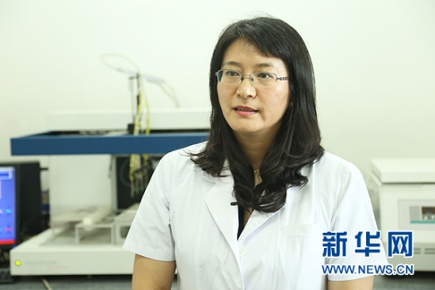

接种宫颈癌疫苗 总体保护效力是关键
新华网北京8月7日电（袁馨晨）上周，我国内地首个预防宫颈癌的疫苗正式开打，引发各界关注。“在没有疫苗之前，预防宫颈癌主要靠定期筛查，将病变阻断在早期阶段。”中国医学科学院肿瘤医院肿瘤流行病学室副主任赵方辉教授在接受新华网专访时表示，新上市的疫苗对宫颈癌的保护效力和安全性已经得到国内外临床试验结果的证明，将有助于从源头上遏制宫颈癌的发生，进一步降低发病。
宫颈癌发病呈现年轻化趋势
宫颈癌是继乳腺癌之后的女性健康第二大“杀手”。根据国家癌症中心公布的数据显示，2015年我国宫颈癌新发病例约10万例，死亡约3万例，意味着每天有近300名女性罹患宫颈癌、80余人死于该病，宫颈癌也是15岁至44岁女性的第三大高发癌症。
“数据显示，我国宫颈癌的发病率和死亡率逐渐升高，并呈现年轻化趋势。相比于十多年前，目前宫颈癌的平均发病年龄提前了约10岁。”赵方辉指出，致癌型人乳头瘤病毒（HPV）是导致宫颈癌的主要原因，近些年随着人们的思想观念和行为方式发生改变，病毒暴露的年龄有所提前，是宫颈癌发病年轻化的重要原因。
一旦罹患宫颈癌，有哪些有效的治疗手段？对此，赵方辉介绍，手术、放疗和化疗是治疗宫颈癌的主要方法。“感染HPV病毒、发生宫颈病变具有隐匿性，没有明显症状，很多宫颈癌患者在发现得病时已发展成晚期病变。而对于中晚期宫颈癌患者，采用手术、放化疗治疗并不能完全治愈，对于患者的身心健康和家庭都会产生很大的影响。”因此，赵方辉建议广大女性应尽早检查和预防，把宫颈癌“扼杀”在未发生或萌芽阶段。

中国医学科学院肿瘤医院肿瘤流行病学室副主任赵方辉教授接受新华网专访。新华网 杨锘摄
新上市的宫颈癌疫苗具备交叉保护效果
没有疫苗之前，女性预防宫颈癌主要是靠定期筛查和早发现、早干预，将病变阻断在早期阶段。“新上市的疫苗更有利于女性主动预防感染HPV病毒，从源头上遏制宫颈癌的发生，从而更有效地降低宫颈癌的发病。”赵方辉说。
据了解，目前世界卫生组织明确的致癌型HPV病毒型别共有13种，其中HPV16/18是导致宫颈癌最主要的型别，大约70%-80%的宫颈癌由HPV16/18所引起，而日前上市的宫颈癌疫苗就是以HPV16/18两种病毒型别为靶向。赵方辉介绍，国内外的多个临床试验结果均显示，该疫苗能够有效预防HPV16/18感染及其导致的宫颈癌及癌前病变。
此外，赵方辉表示，该疫苗还具有一定的交叉保护作用，也就是说，接种疫苗不但能够有效预防由HPV16/18引起的宫颈癌前病变，也能在一定程度上预防由HPV31/33/45/52/58等致癌型病毒所诱发的宫颈癌前病变，根据国际临床数据显示，该疫苗对于宫颈癌的总体保护效力超过93%。
“通俗来说，HPV31/33/45/52/58等型别和HPV16/18是一个种属，类似于一个‘病毒家族’。虽然疫苗主要是针对HPV16/18两个‘罪魁祸首’，但同时也能对其他家族成员起到一定的防御作用。”她说。
接种疫苗后仍需坚持定期筛查
目前，预防宫颈癌的HPV疫苗已经可以在各地社区医院及社区卫生服务中心进行接种。那么，究竟哪些人群应该接种疫苗？对此，赵方辉指出，疫苗获批的接种年龄为9岁到25岁，“年轻女性越早接种，所产生的免疫效果会越好”。她同时建议，孕期及备孕的年轻女性应推迟或中断接种程序，待妊娠期结束后再进行接种。
“接种HPV疫苗后，定期筛查仍是必不可少。”赵方辉强调，目前市面上的宫颈癌疫苗均为针对特异病毒型别的预防性疫苗，虽然具有交叉保护效果，但仍有少部分致癌病毒型别未被覆盖，因此即使接种了疫苗，女性仍然存在发生HPV病毒感染和宫颈病变的可能性。
“为了全面预防宫颈癌的发生，女性在接种疫苗后仍需坚持定期筛查，但是筛查间隔可以适当延长。”赵方辉称。
http://m.xinhuanet.com/health/2017-08/07/c_1121442067.htm